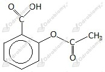

Zdania prawdziwe to a, c, e oraz f.
E 330 - kwas cytrynowy - pełni rolę przeciwutleniacza
E 338 - kwas fosforowy(V) - pełni rolę przeciwutleniacza
E 150d - karmel syntetyczny - barwnik
E 954 - sacharyna - substancja słodząca
E 950 - acesulfam K - substancja słodząca
E 951 - aspartam - substancja słodząca
E 211 - benzoesan sodu - konserwant, hamuje rozwój pleśni i drożdży
E 202 - sorbinian potasu - konserwant
Wzór:

Masa cząsteczkowa kwasu salicylowego (C9H8O4) wynosi 180 u. Masa atomowa węgla to 12 u.
Zawartość procentowa węgla w cząsteczce tego kwasu to 60%.
Zaznaczone wiązanie to wiązanie peptydowe .
Opis doświadczenia:
Na przekrojonego ziemniaka nanosimy kroplę jodyny.
Obserwacje:
Ziemniak barwi się na intensywnie niebieski kolor.
Wniosek:
Zaszła reakcja charakterystyczna świadcząca o obecności skrobi w ziemniaku.
Aminokwasy łączą się ze sobą poprzez wiązanie peptydowe. Powstaje ono w wyniku połączenia grupy karboksylowej jednej cząsteczki aminokwasu z grupą aminową drugiej cząsteczki.
Równanie reakcji:
Liczymy zawartość chloru w jednym m3 powietrza w pomieszczeniu:
W jednym m3 powietrza w pomieszczeniu znajduje się 800 mg chloru. Jest to wartość mniejsza niż LC50 chloru.